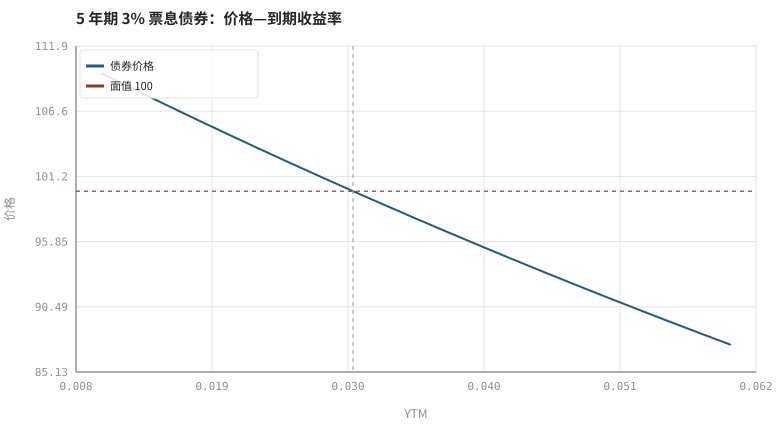
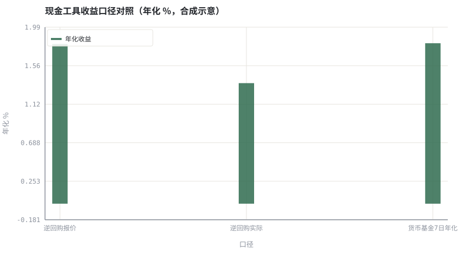

第 08 章债券、货币基金与逆回购：现金这一端
组合里最不性感的一端，决定了你能不能活到策略生效的那一天。
本章位置：第一阶段以「现金这一端」收尾；第 09 章 · 债券定价、久期与期限结构 把价格—利率关系升级为久期与凸性，正式进入第二阶段的定价。
债券是一段确定的 cashflow[] 被 discount() 映射成现在的值；利率就是折现率参数。现金工具则是不同的 settle() 实现，计息天数与手续费藏在实现细节里。
- 能写出债券价格与到期收益率的折现关系。
- 能解释利率上升为何使存量债券价格下跌。
- 能计算逆回购的占款收益与货币基金的七日年化。
- 能为「应急资金 / 短期资金 / 长期资金」选择不同的现金工具。
§知识点地图
每个知识点都配了 1～2 个扩展学习链接；本章完整资源清单见 扩展学习。
| # | 知识点 | 扩展学习 | 状态 |
|---|---|---|---|
| 1 | 票息与面值 | Bond (finance) · Money market fund | 正文已覆盖 |
| 2 | 到期收益率 YTM | Rate of return · Logarithmic return | 正文已覆盖 |
| 3 | 价格与利率反向 | Bond (finance) · Money market fund | 正文已覆盖 |
| 4 | 货币基金与万份收益 | Rate of return · Logarithmic return | 正文已覆盖 |
| 5 | 国债逆回购 | Repurchase agreement · Money market fund | 正文已覆盖 |
| 6 | 七日年化 | Rate of return · Compound interest | 正文已覆盖 |
| 7 | 信用风险与流动性 | Modern portfolio theory · Value at risk | 正文已覆盖 |
| 8 | 现金管理分层 | Bond (finance) · Money market fund | 正文已覆盖 |
§8.1债券是一组确定的现金流
P(y) = Σ_{t=1}^{T} C / (1+y)^t + F / (1+y)^T
C 是票息、F 是面值、y 是到期收益率。价格与 y 单调递减，且曲线是凸的：利率下降带来的涨幅大于同等幅度上升带来的跌幅。第 09 章会把这一阶、二阶敏感度写成久期与凸性。
信用利差是 y 相对无风险利率的额外部分：同样的票息，信用资质越差，要求的 y 越高、价格越低。所以「高收益债」不是更聪明的选择，而是把违约风险换成了票息。
§8.2现金工具的三个口径
| 工具 | 收益口径 | 流动性 | 要注意什么 |
|---|---|---|---|
| 活期 / 通知存款 | 年利率按日计息 | 极高 | 利率最低，通常有存款保险上限 |
| 货币基金 | 万份收益 / 七日年化 | 高（常有快赎额度） | 七日年化是短期年化，不代表长期收益 |
| 国债逆回购 | 年化报价 × 占款天数 / 365 | 到期自动回款 | 计息天数、手续费、跨节假日占款 |
| 短债 / 同业存单指数基金 | 净值波动 + 票息 | 较高 | 存在净值回撤，不是保本 |
逆回购收益有个容易错的细节：利息 = 本金 × 年化利率 × 计息天数 / 365 − 手续费，而资金实际占用天数可能与名义期限不同（跨周末、跨长假）。把「报价利率」直接当「到手收益率」会高估。
§8.3现金是仓位，不是空仓
在资产配置里，现金同时承担三种角色：流动性缓冲（应急支出不迫使你在低点卖出）、期权价值（有机会时可调仓）、波动稀释。第 14 章的再平衡、第 30 章的保证金管理都依赖这一端有足够厚度。
§Python 分析实例
实验 8-1 · 债券价格—收益率曲线与现金工具收益换算
#!/usr/bin/env python3
# -*- coding: utf-8 -*-
"""计算 5 年期债券在不同 YTM 下的价格，并把逆回购与货币基金换算到同一口径。
数据为合成数据或模型示意，仅用于教学，不构成投资建议。
"""
from __future__ import annotations
import math
import pathlib
import random
import statistics
import sys
sys.path.insert(0, str(pathlib.Path(__file__).resolve().parents[3] / "tools"))
from chart import Chart, candlestick, heatmap, BLUE, RED, GREEN, AMBER
FIG = pathlib.Path(__file__).resolve().parents[1] / "fig"
FIG.mkdir(exist_ok=True)
random.seed(7)
# ---- 参数区 ----
FACE = 100.0 # 面值
COUPON = 0.03 # 年票息率
MATURITY = 5 # 年数
REPO_CAP = 100000.0
REPO_RATE = 0.018 # 逆回购年化报价
REPO_DAYS = 7 # 名义期限
REAL_DAYS = 9 # 跨周末的实际占款天数
REPO_FEE = 0.00001 # 手续费率
MM_DAILY = (0.000048, 0.000051, 0.000049, 0.000050, 0.000052, 0.000047, 0.000050)
# ---- 计算与作图 ----
def bond_price(y):
cf = [COUPON * FACE] * MATURITY
cf[-1] += FACE
return sum(c / (1 + y) ** t for t, c in enumerate(cf, 1))
ys = [0.01 + i * 0.0025 for i in range(21)]
ps = [bond_price(y) for y in ys]
c = Chart(FIG / "08-bond-curve.svg", "5 年期 3% 票息债券：价格—到期收益率", xlabel="YTM", ylabel="价格")
c.line(ys, ps, BLUE, label="债券价格")
c.hline(FACE, RED, label="面值 100")
c.vline(COUPON, "#9aa6b2", label="票息率 3%")
print("债券图:", c.save())
repo_interest = REPO_CAP * REPO_RATE * REPO_DAYS / 365 - REPO_CAP * REPO_FEE
repo_effective = repo_interest / REPO_CAP * 365 / REAL_DAYS
mm_annual = statistics.fmean(MM_DAILY) * 365
mm_7d = (1 + statistics.fmean(MM_DAILY)) ** 7 - 1
labels = ["逆回购报价", "逆回购实际", "货币基金7日年化"]
vals = [100 * REPO_RATE, 100 * repo_effective, 100 * mm_annual]
b = Chart(FIG / "08-cash.svg", "现金工具收益口径对照（年化 %，合成示意）",
xlabel="口径", ylabel="年化 %", xticks=[(i, n) for i, n in enumerate(labels)])
b.bars(range(3), vals, GREEN, label="年化收益")
print("现金图:", b.save())
print("YTM=票息时价格=%.3f | YTM 5%% 时价格=%.3f（跌 %.2f%%）" %
(bond_price(COUPON), bond_price(0.05), 100 * (bond_price(0.05) / FACE - 1)))
print("逆回购利息=%.2f 元 报价=%.2f%% 按实际占款折算=%.2f%% | 货基7日累计=%.4f%% 年化=%.2f%%" %
(repo_interest, 100 * REPO_RATE, 100 * repo_effective, 100 * mm_7d, 100 * mm_annual))操作：核对 YTM=票息率 时价格恰为 100；把 REAL_DAYS 改成 7 看折算收益如何回到报价。 预期与判读：票息率等于 YTM 时债券平价；YTM 上升到 5% 后价格低于面值。逆回购因实际占款 9 天而非 7 天，真实年化低于报价——这是最典型的现金管理口径误差。
改参数看趋势：把 MATURITY 改成 20，观察同一 YTM 变化带来的价格跌幅显著放大（引出第 09 章久期）。 文件位置：part1/08-fixed-income/code/08-cash.py


代码块右上角可一键复制；仓库里的 code/*.py 由 tools/extract_code.py 从这些代码块自动抽取。脚本只用标准库、固定 random.seed(7)，运行后写出 fig/*.svg；批量运行用 ./tools/run_python.sh。
§本章参考资料
按本章知识点挑选的精读资料；更多检索入口见 扩展学习。
Bond (finance)
百科 · 参考资料票息、面值、到期与信用风险
怎么用：票息、面值、到期与信用风险https://en.wikipedia.org/wiki/Bond_(finance)
Money market fund
百科 · 参考资料现金管理的低波动工具与风险边界
怎么用：货币基金的运作与风险边界https://en.wikipedia.org/wiki/Money_market_fund
Repurchase agreement
百科 · 参考资料逆回购的抵押与期限结构
怎么用：逆回购的抵押与期限结构https://en.wikipedia.org/wiki/Repurchase_agreement
§常见误区
- 把逆回购报价年化直接当到手收益，忽略实际占款天数。
- 把货币基金当保本存款，忽略极端赎回与利率风险。
- 用「七日年化」推断未来一年收益。
- 只看票息不看信用利差，把高风险债当高息存款。
§习题与思考
- 推导为什么票息率等于 YTM 时债券价格等于面值。
- 把示例的
REAL_DAYS设为 14，计算实际年化并解释跨长假报价为何常升高。 - 为「3 个月内要用的钱」和「3 年不用的钱」各选一种现金工具，写出理由与失效条件。
§扩展学习
以下资料按本章知识点挑选，可直接精读或对照真实数据；知识点地图里每一条也挂了 1～2 个直达链接。
- Bond (finance)（百科）：票息、面值、到期与信用风险
Bond (finance) - Money market fund（百科）：现金管理的低波动工具与风险边界
Money market fund - Repurchase agreement（百科）：逆回购的抵押与期限结构
Repurchase agreement - Yield curve（百科）：期限结构、倒挂与远期利率
Yield curve - FRED（数据）：利率、通胀、信用利差等免费时间序列
FRED
继续扩展：在 Google Scholar 检索本章相关论文 · 在 MIT OCW 检索配套课程 · 在 arXiv 检索预印本 · 全书参考资源总表 · 附录 A 速查与链接总表
§延伸阅读与内链
- 第 09 章 · 债券定价、久期与期限结构 久期、凸性与期限结构；第 14 章 · 资产配置、再平衡与定投 现金在资产配置中的角色。